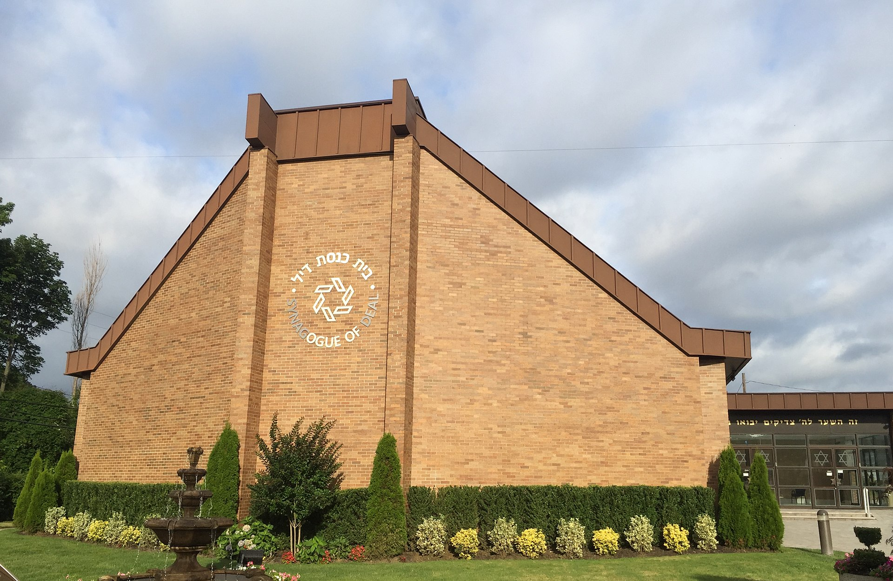

Painting of the first day of the battle,with HMS Name in the centre left
The naval Battle of Lagos took place between a British fleet commanded by Sir Edward Boscawen and a French fleet underJean-François de La Clue-Sabran over two days in 1759 during the Seven Years' War. the French fleet successfully passed through the Strait of Gibraltar , but was sighted by a British ship shortly after it entered the Atlantic. The British fleet was in nearby Gibraltar ,undergoing a major refit. It left port amidst great confusion, most ships not having their refurbishments completed, with many delayed and sailing in a second squadron. Aware that he was pursued, La Clue altered his plan and changed course; half his ships failed to follow him in the dark, but the British did. The British caught up with the French on the 18th and fierce fighting ensued, Gult of cadizduring which several ships were badly damaged and one French ship was captured. The British, who greatly outnumbered the remaining six French ships, pursued them through the moonlit night of 18/19 August, during which a further two French ships made their escape. On the 19th the remnants of the French fleet attempted to shelter in neutral Portuguese waters near Lagos , but Boscawen violated that neutrality, capturing a further two French ships and destroying the other two.(Full Article...)
Did you know ...
Synagogue of Deal